Neuralis Studio Numbered actual browser captures. Training, AxisLab, encrypted retrieval, graph evaluation and stored NES pixels come from executed local computations. Live transport restrictions are reported explicitly.
Open the workbench
001 — Research overview 002 — Runnable browser demo library 003 — Real browser model training 004 — Interactive neural network explorer 005 — Measured weights, gradients and activations 006 — Attention inspection and capability states 007 — Controlled activation interventions 008 — Recorded experiments and replay 009 — Run comparison 010 — Dataset exploration and custom CSV import 011 — Actual Python runtime connection 012 — Workspace and desktop runtime settings 013 — Experiment configuration wizard 014 — Checkpoint and artifact management 015 — Execution and capability diagnostics 016 — Representation analysis workbench 017 — Leakage-safe CSV dataset preparation 018 — Responsive mobile demo library 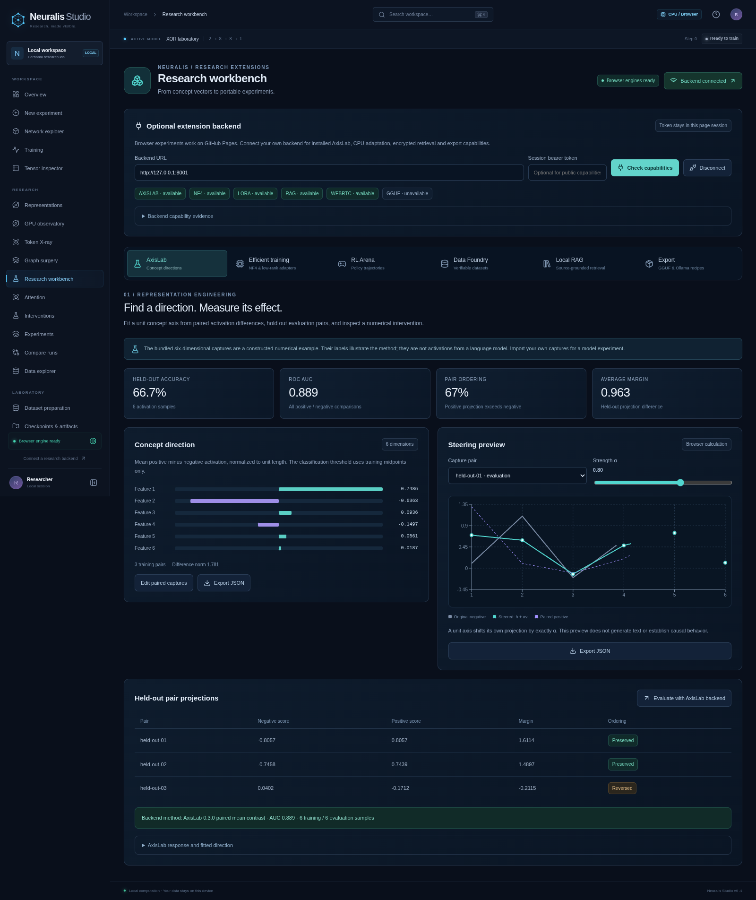
019 — AxisLab paired directions and held-out evaluation 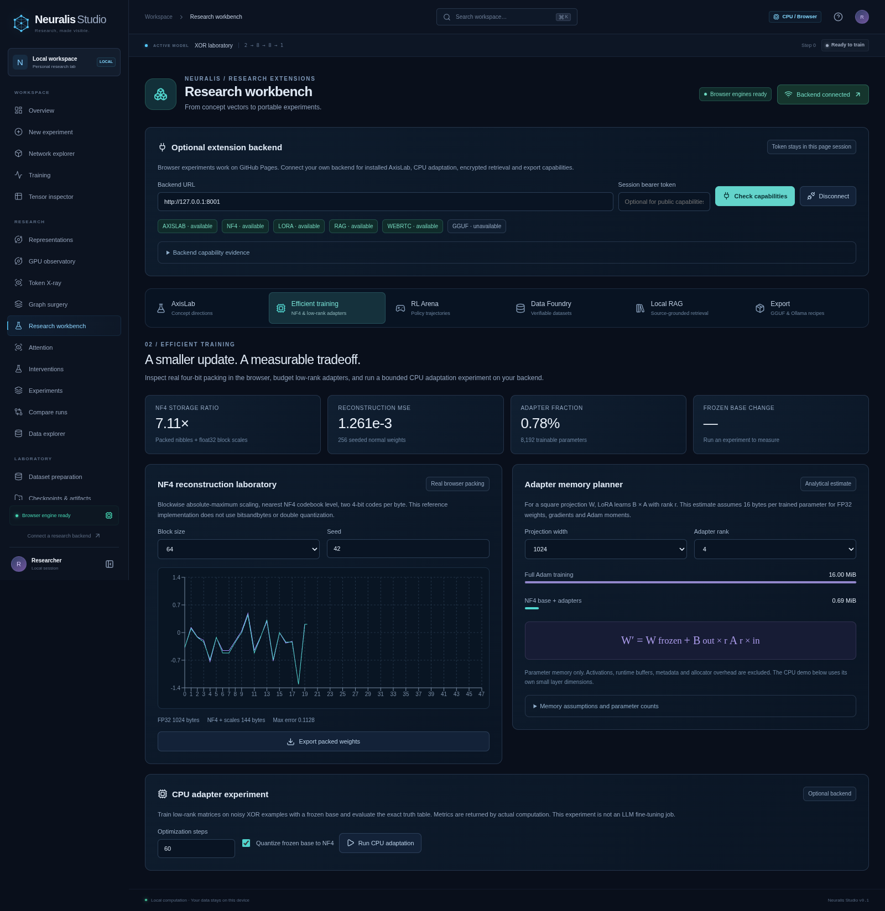
020 — Packed NF4 quantization and reconstruction 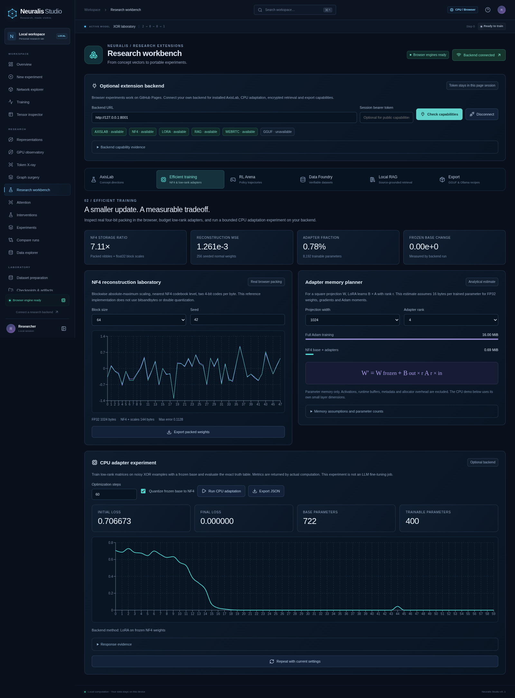
021 — Measured frozen-base low-rank adaptation 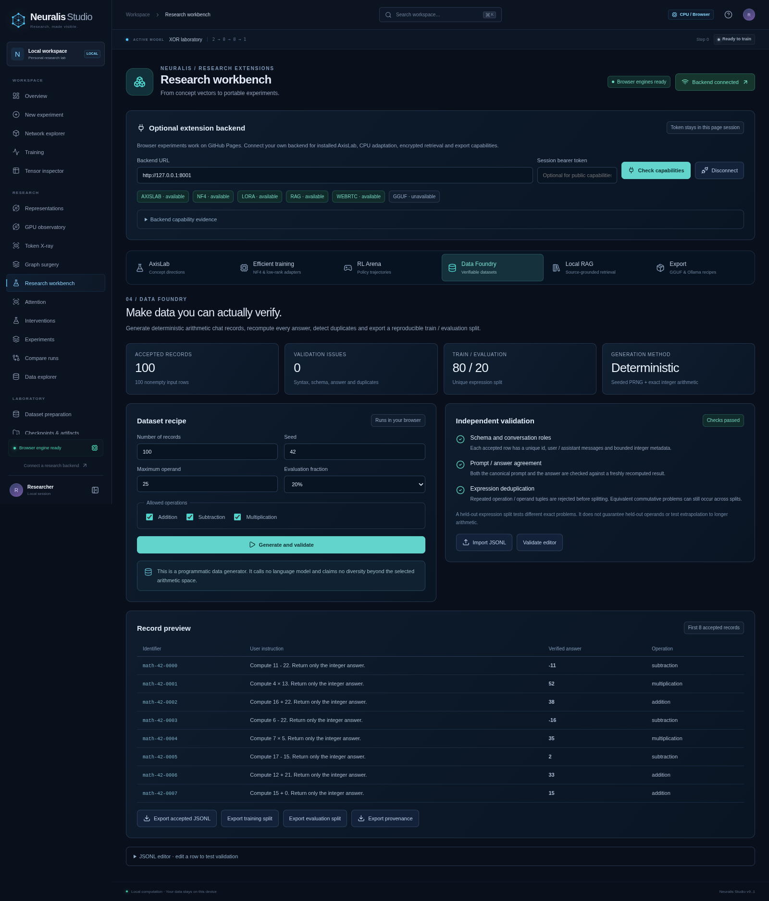
022 — Verified synthetic JSONL generation and split 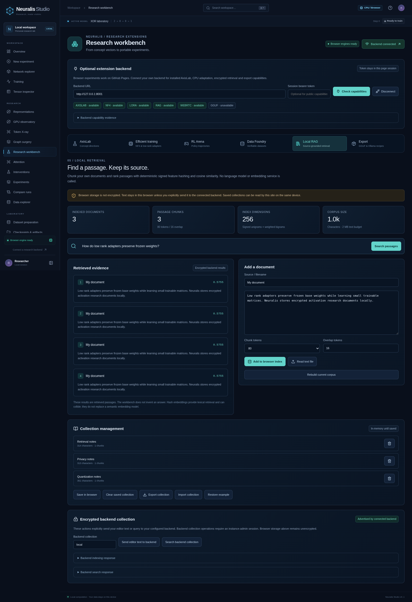
023 — Local retrieval with actual encrypted backend collection 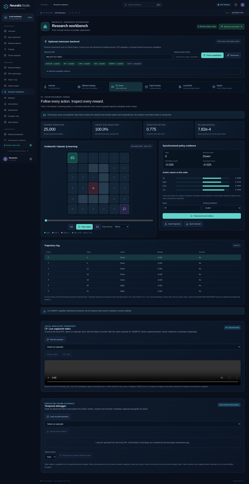
024 — Actual tabular policy training and trajectory replay 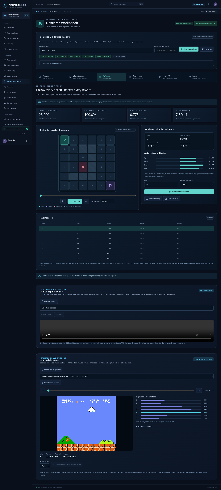
025 — Actual NES pixels and persisted policy evidence 026 — Actual WebRTC capability diagnosis under managed browser UDP restrictions 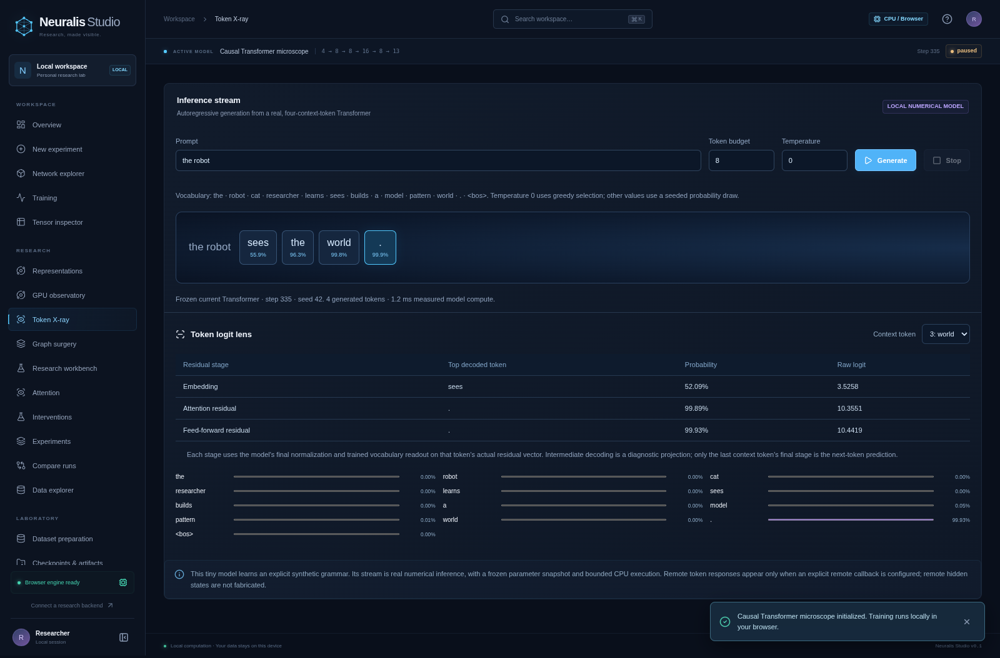
027 — Actual trained Transformer inference and residual logit lens 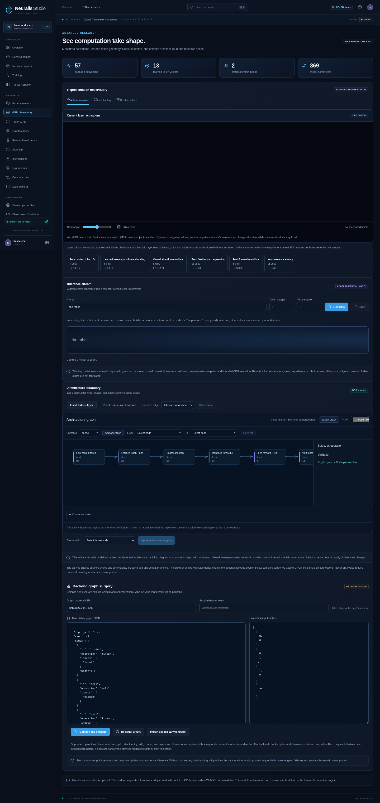
028 — Actual WGSL activation particle rendering 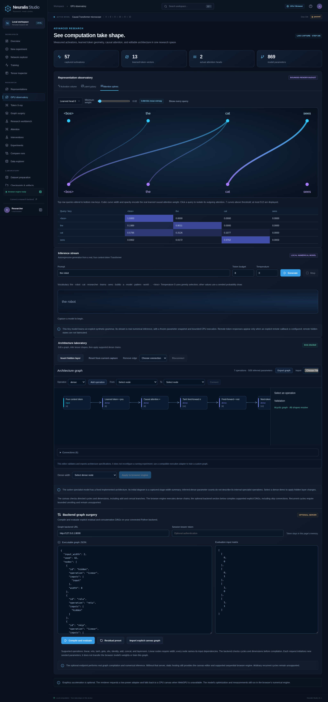
029 — Weighted curves from captured causal attention 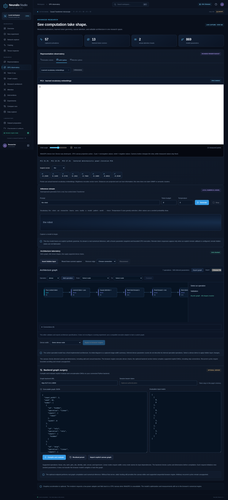
030 — Measured PCA of learned vocabulary embeddings 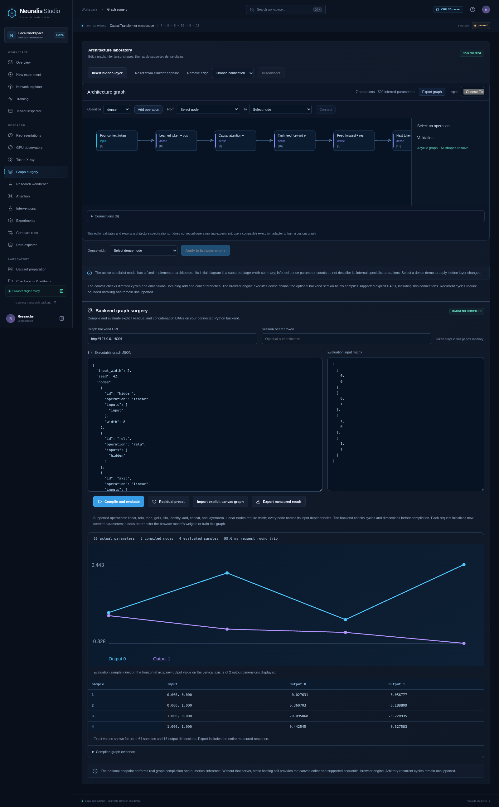
031 — Actual backend residual DAG compilation and evaluation 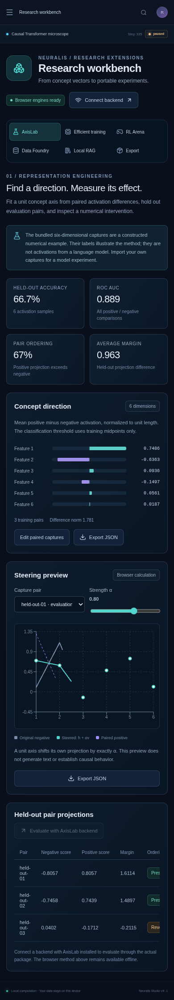
032 — Responsive research extensions on mobile